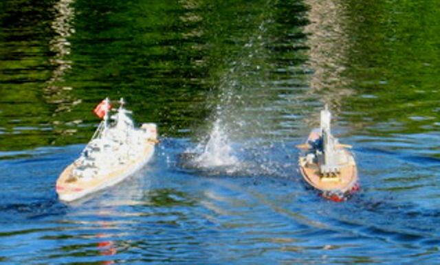
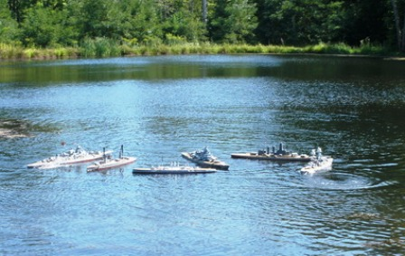

International R/C Warship Combat Club, Inc.
Keeping Ponds Safe since 1978
2012 Fall Reginals
The Battle For Emperor Mings Moat
1, 2 and 3 of Sept 2012
Carl's Pond
We had a great time! The weather was awesome and so was the battling. We had many sinks and I did a whole bunch of patching this weekend. I lost both my ships a few times. I was battling my Arizona all weekend (literally) and my bro was running my Bis. There is some great video but we missed my most beautiful sink where I nose dived the Arizona into the shore like a sub. I also whipped it back once from the middle of the pond with it's recovery line. That was extreme float testing! I filled it with all sorts of crap and needed a trip to the hose. Saturday night we escaped into town for one of my friend's homebrewed beer at Crossroads brewery! A trip to wally world rounded out the week. We met Mike and his nephews from New Hampshire on Monday and had all of them shooting at fish in no time.
Carl's wife ran the week of meals and we had an awesome time.
Captain
USS Arizona
Iceman

